Гриль BORK G800
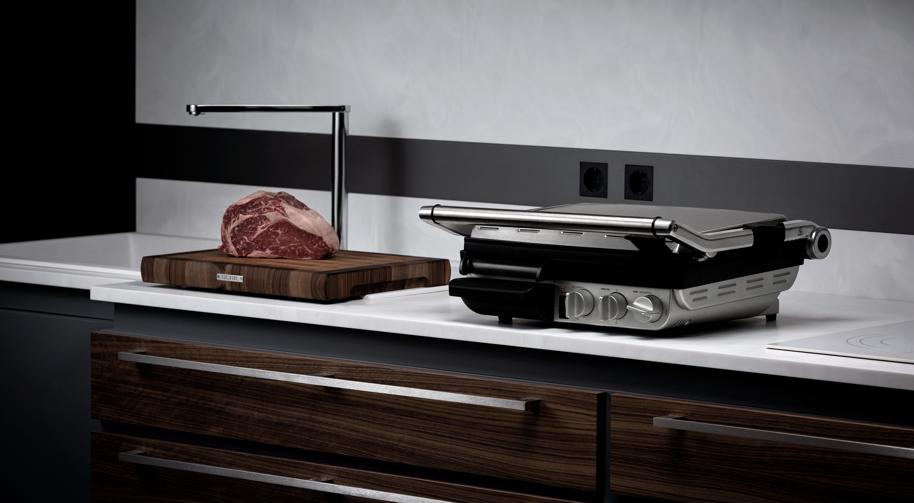Контактный гриль или открытый гриль для барбекю
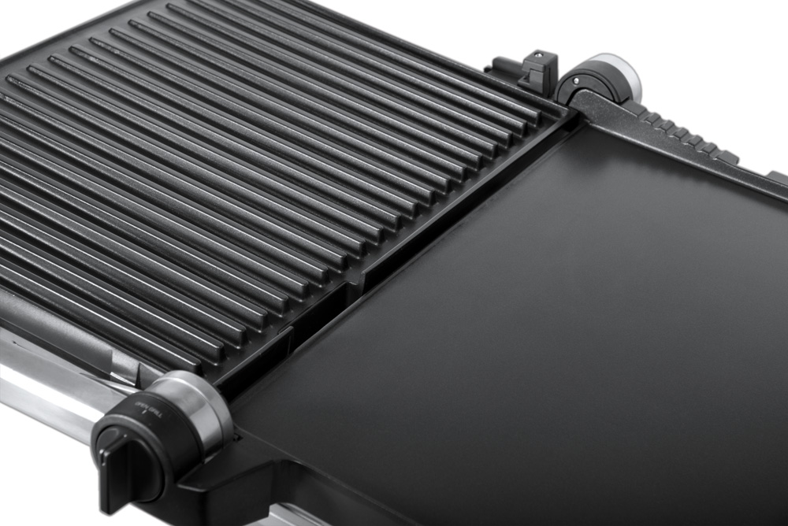Продуманная конструкция гриля предоставляет возможность использования в режиме контактного гриля. Это режим идеально подходит для приготовления овощей. Благодаря прогреву с двух сторон приготовление происходит намного быстрее, на поверхности овощей запекается глюкоза, что придаёт им характерную сладость (запекание Nordic). Продукты сохраняют больше витаминов.
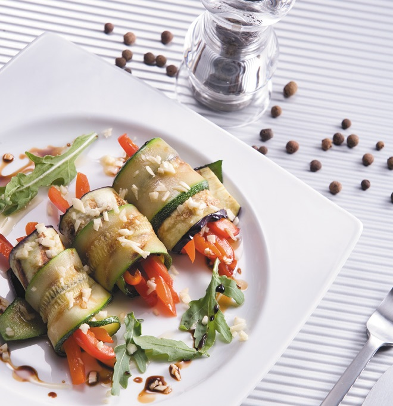Для приготовления в режиме контактного гриля и пресса для сэндвичей можно установить регулятор высоты в одно из шести положений. Эта особенность позволяет выбрать силу давления для сохранения сочности и формы продукта.
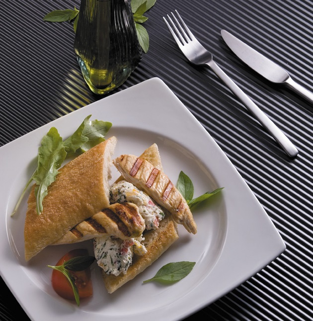Для приготовления идеального сочного стейка из говядины или нежного филе из рыбы, воспользуйтесь режимом открытого гриля.
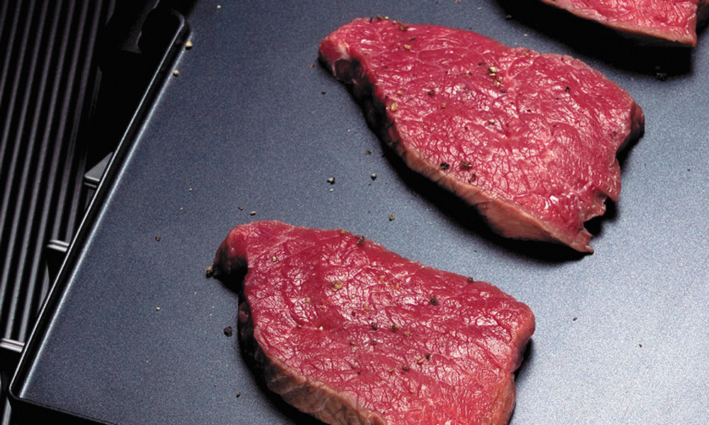Регулировка угла наклона нижней рабочей поверхности
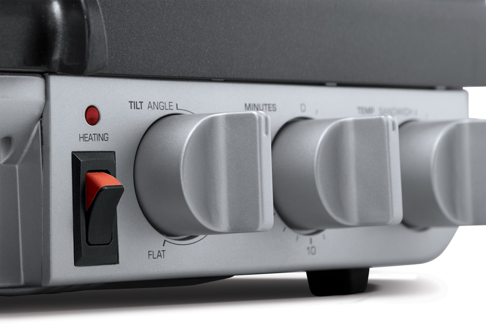Возможность регулировать угол наклона нижней рабочей поверхности позволяет легко удалять излишний жир и использовать гриль для приготовления диетических блюд без жира. Горизонтальное положение рекомендуется для приготовления продуктов в собственном соку, изделий из теста, овощей и блюд из яиц.
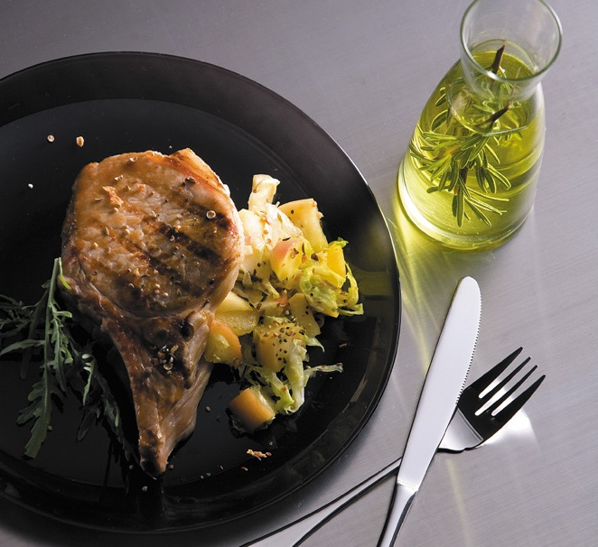Плоская рабочая поверхность plancha (планча)

Plancha идеально подходит для приготовления овощей, фруктов, блюд из яиц и теста. Основная особенность в том, что в процессе приготовления у жидкости нет возможности выпариваться из продукта. Овощи и фрукты получаются более сочными продукты из теста воздушными.
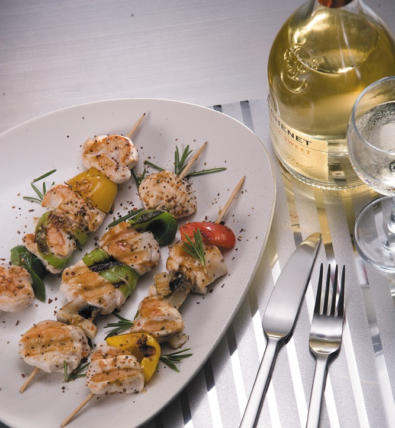Рифлёная рабочая поверхность gril (гриль)
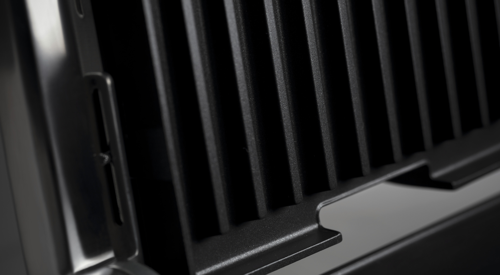Благодаря ребристому рисунку на приготовленном продукте остаются характерные полоски. Но это далеко не главное. Контакт продукта с поверхностью гриля минимален, поверхность меньше остывают, что позволяет готовить без масла, а мясо не «сгорит». В процессе приготовления на поверхностях gril из продукта выходит больше влаги, блюдо получается не варёным, а именно жареным. Излишки жира, выделяемые во время готовки мяса, не пропитывают пищу, а стекают по желобкам и собираются в лотке.

Приготовление на гриле считается самым полезным способом жарения, так как нет пригоревшего масла — а это источник канцерогенных веществ, образующихся при нагревании насыщенных жиров. Поэтому мясные блюда, приготовленные на гриле, можно есть не опасаясь за свое здоровье!
Лоток для сбора жира
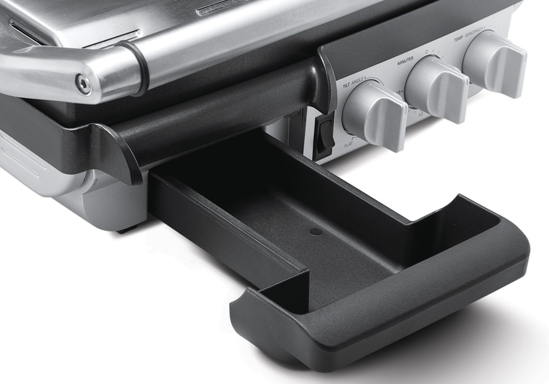Большой съемный лоток в передней части гриля для сбора жира обеспечивает чистоту стола и легкую чистку после приготовления.
Настройки температуры

Температура 160 – 205 ⁰С идеально подойдёт для приготовления овощей и фруктов, а также сэндвичей панини.
SEAR 230 ⁰С температурный режим для приготовления мяса, рыбы, птицы.
Таймер на 15 минут
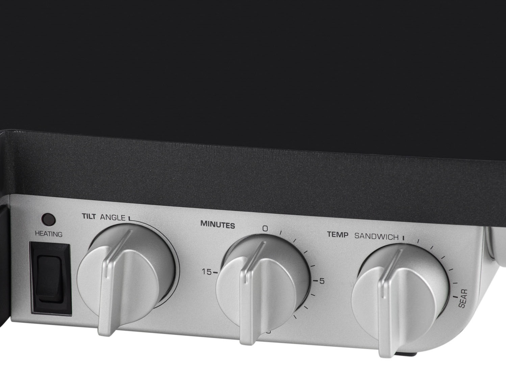Таймер с возможностью обратного отсчета времени обеспечивает дополнительное удобство при приготовлении. По истечении заданного времени таймер однократно подаст звуковой сигнал. Гриль после этого не отключится, а останется в рабочем состоянии.
Антипригарное покрытие
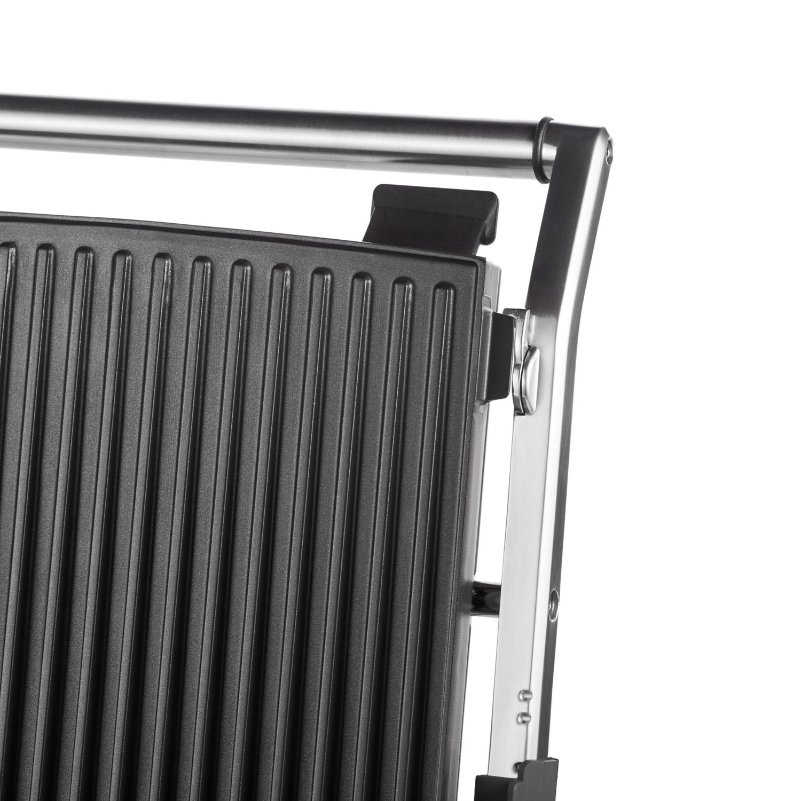Трехслойное антипригарное покрытие Quantanium обладает повышенной прочностью, устойчивостью к царапинам и повреждениям. Позволяет готовить вкусную и здоровую пищу без жира и масла. Обеспечивает легкую эксплуатацию и чистку. Для очистки гриля протрите разогретый гриль бумажной салфеткой, затем добавьте на разогретые поверхности небольшое количество воды и закройте гриль, образовавшийся пар помо
Не содержит PFOA (Перфтороктановая кислота)
Нагревательные элементы встроены в поверхности для приготовления
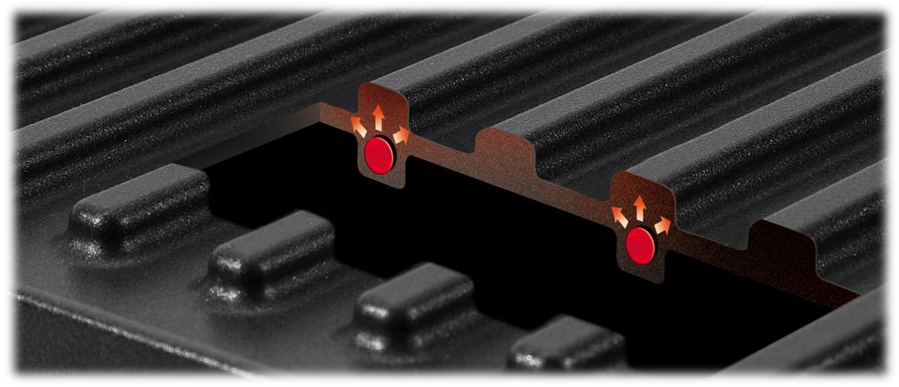Встроенный нагревательный элемент мощностью 2400 Вт обеспечивает быстрый и равномерный нагрев до максимальной температуры. Сенсоры гарантируют постоянное поддержание стабильной рабочей температуры.
Компактное хранение
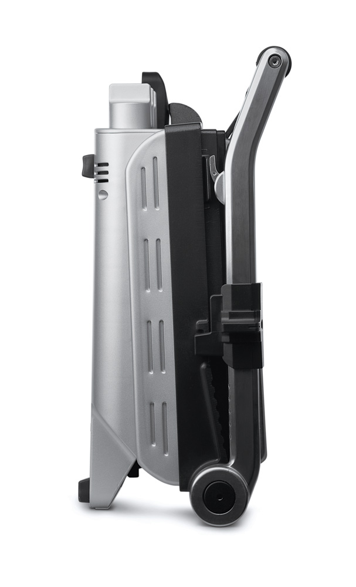Благодаря специальному замку гриль хранится в вертикальном положении и не занимает много места на вашей кухне. Эта функция также полезна при переноске гриля.
Технические характеристики
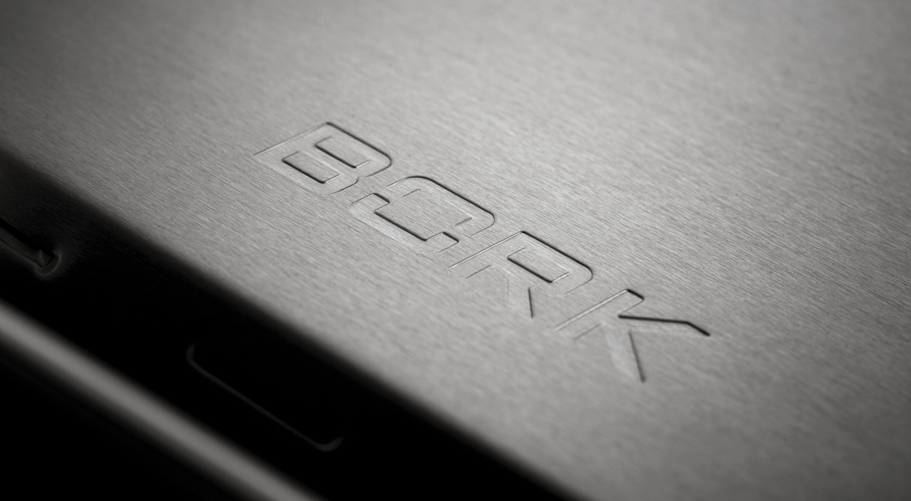
Напряжение: 220–240 В
Частота: 50/60 Гц
Мощность: 2000–2400 Вт
Габариты (В×Ш×Г): 160×510×380 мм
Вес: 9,6 кг.
Сделано в Китае